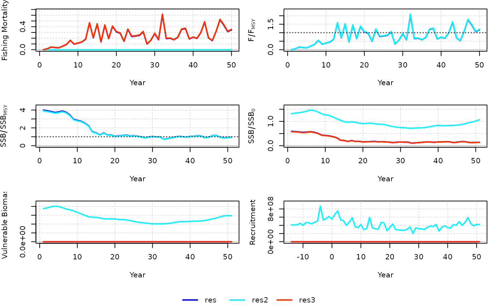

SCA_RWM is a modification of SCA that incorporates a random walk in M in logit space (constant with age).
Set the variance (start$tau_M) to a small value (0.001) in order to fix M for all years, which is functionally equivalent to SCA.
SCA_RWM(
x = 1,
Data,
AddInd = "B",
SR = c("BH", "Ricker", "none"),
vulnerability = c("logistic", "dome"),
catch_eq = c("Baranov", "Pope"),
CAA_dist = c("multinomial", "lognormal"),
CAA_multiplier = 50,
rescale = "mean1",
max_age = Data@MaxAge,
start = NULL,
prior = list(),
fix_h = TRUE,
fix_F_equilibrium = TRUE,
fix_omega = TRUE,
fix_tau = TRUE,
LWT = list(),
early_dev = c("comp_onegen", "comp", "all"),
late_dev = "comp50",
refyear = expression(length(Data@Year)),
M_bounds = NULL,
integrate = FALSE,
silent = TRUE,
opt_hess = FALSE,
n_restart = ifelse(opt_hess, 0, 1),
control = list(iter.max = 2e+05, eval.max = 4e+05),
inner.control = list(),
...
)A position in the Data object (by default, equal to one for assessments).
An object of class Data
A vector of integers or character strings indicating the indices to be used in the model. Integers assign the index to the corresponding index in Data@AddInd, "B" (or 0) represents total biomass in Data@Ind, "VB" represents vulnerable biomass in Data@VInd, and "SSB" represents spawning stock biomass in Data@SpInd. Vulnerability to the survey is fixed in the model.
Stock-recruit function (either "BH" for Beverton-Holt, "Ricker", or "none" for constant mean recruitment).
Whether estimated vulnerability is "logistic" or "dome" (double-normal).
See details for parameterization.
Whether to use the Baranov equation or Pope's approximation to calculate the predicted catch at age in the model.
Whether a multinomial or lognormal distribution is used for likelihood of the catch-at-age matrix. See details.
Numeric for data weighting of catch-at-age matrix if CAA_hist = "multinomial". Otherwise ignored. See details.
A multiplicative factor that rescales the catch in the assessment model, which
can improve convergence. By default, "mean1" scales the catch so that time series mean is 1, otherwise a numeric.
Output is re-converted back to original units.
Integer, the maximum age (plus-group) in the model.
Optional list of starting values. Entries can be expressions that are evaluated in the function. See details.
A named list for the parameters of any priors to be added to the model. See below.
Logical, whether to fix steepness to value in Data@steep in the model for SCA. This only affects
calculation of reference points for SCA2.
Logical, whether the equilibrium fishing mortality prior to the first year of the model
is estimated. If TRUE, F_equilibrium is fixed to value provided in start (if provided),
otherwise, equal to zero (assumes unfished conditions).
Logical, whether the standard deviation of the catch is fixed. If TRUE,
omega is fixed to value provided in start (if provided), otherwise, value based on Data@CV_Cat.
Logical, the standard deviation of the recruitment deviations is fixed. If TRUE,
tau is fixed to value provided in start (if provided), otherwise, value based on Data@sigmaR.
A named list (Index, CAA, Catch) of likelihood weights for the data components. For the index, a vector of length survey. For CAL and Catch, a single value.
Numeric or character string describing the years for which recruitment deviations are estimated in SCA. By default,
equal to "comp_onegen", where rec devs are estimated one full generation prior to the first year when catch-at-age (CAA) data are available.
With "comp", rec devs are estimated starting in the first year with CAA. With "all", rec devs start at the beginning of the model.
If numeric, the number of years after the first year of the model for which to start estimating rec devs. Use negative numbers for years prior to the first year.
Typically, a numeric for the number of most recent years in which recruitment deviations will
not be estimated in SCA (recruitment in these years will be based on the mean predicted by stock-recruit relationship).
By default, "comp50" uses the number of ages (smaller than the mode)
for which the catch-at-age matrix has less than half the abundance than that at the mode.
An expression for the year for which M is used to report MSY and unfished reference points. By default, terminal year. If multiple years are provided, then the mean M over the specified time period is used.
A numeric vector of length 2 to indicate the minimum and maximum M in the random walk as a proportion of the starting M
(start$M). The default min and max are 75% and 125%, respectively.
Logical, whether the likelihood of the model integrates over the likelihood of the recruitment deviations (thus, treating it as a random effects/state-space variable). Otherwise, recruitment deviations are penalized parameters.
Logical, passed to MakeADFun, whether TMB
will print trace information during optimization. Used for diagnostics for model convergence.
Logical, whether the hessian function will be passed to nlminb during optimization
(this generally reduces the number of iterations to convergence, but is memory and time intensive and does not guarantee an increase
in convergence rate). Ignored if integrate = TRUE.
The number of restarts (calls to nlminb) in the optimization procedure, so long as the model
hasn't converged. The optimization continues from the parameters from the previous (re)start.
A named list of arguments for optimization to be passed to
nlminb.
A named list of arguments for optimization of the random effects, which
is passed on to newton.
Other arguments to be passed.
An object of class Assessment.
The model estimates year-specific M (constant with age) as a random walk in logit space, bounded by
a proportion of start$M (specified in M_bounds).
The starting value for the first year M (start$M) is Data@Mort[x] and is fixed, unless a prior is provided (prior$M).
The fixed SD of the random walk (tau_M) is 0.05, by default.
Steepness and unfished recruitment in the estimation model, along with unfished reference points, correspond to spawners per recruit using the first year M.
With argument refyear, new unfished reference points and steepness values are calculated. See examples.
Alternative values can be provided in the start list (see examples):
R0 Unfished recruitment, except when SR = "none" where it is mean recruitment.
By default, 150% Data@OM$R0[x] is used as the start value in closed-loop simulation, and 400% of mean catch otherwise.
h Steepness. Otherwise, Data@steep[x] is used, or 0.9 if empty.
M Natural mortality in the first year. Otherwise, Data@Mort[x] is used.
vul_par Vulnerability parameters, see next paragraph.
F A vector of length nyears for year-specific fishing mortality.
F_equilibrium Equilibrium fishing mortality leading into first year of the model (to determine initial depletion). By default, 0.
omega Lognormal SD of the catch (observation error) when catch_eq = "Baranov". By default, Data@CV_Cat[x].
tau Lognormal SD of the recruitment deviations (process error). By default, Data@sigmaR[x].
tau_M The fixed SD of the random walk in M. By default, 0.05.
See SCA for all other information about the structure and setup of the model.
The SCA builds in a stock-recruit relationship into the model. Annual unfished and MSY reference points are calculated and reported in TMB_report of the Assessment object.
Model description and equations are available on the openMSE website.
res <- SCA_RWM(Data = MSEtool::SimulatedData, start = list(M_start = 0.4, tau_M = 0.05))
res2 <- SCA(Data = MSEtool::SimulatedData)
res3 <- SCA_RWM(Data = MSEtool::SimulatedData, start = list(M_start = 0.4, tau_M = 0.001))
# Use mean M in most recent 5 years for reporting reference points
res_5r <- SCA_RWM(Data = MSEtool::SimulatedData,
refyear = expression(seq(length(Data@Year) - 4, length(Data@Year))),
start = list(M_start = 0.4, tau_M = 0.001))
res_5r@SSB0 # SSB0 reported (see also res_5r@TMB_report$new_E0)
#> B
#> 33279.64
res_5r@TMB_report$E0 # SSB0 of Year 1 M
#> [1] 23942.34
# \donttest{
compare_models(res, res2, res3)

# }